실제 수업 영상
교사 화면을 그대로 녹화했습니다
학생들이 노트북으로 수업하는 동안 교사 노트북에 보이는 화면입니다. 격자로 전체를 보다가 한 명을 확대하고, 지난 캡처를 넘겨 보는 흐름을 확인할 수 있습니다.
시작하기
수업 시작까지 화면 세 장
설치 파일로 설치하고 학생 화면 모니터를 실행하면 트레이 아이콘이 생기고 이 화면이 열립니다. 계정 만들기도, 서버 임대도 없습니다.
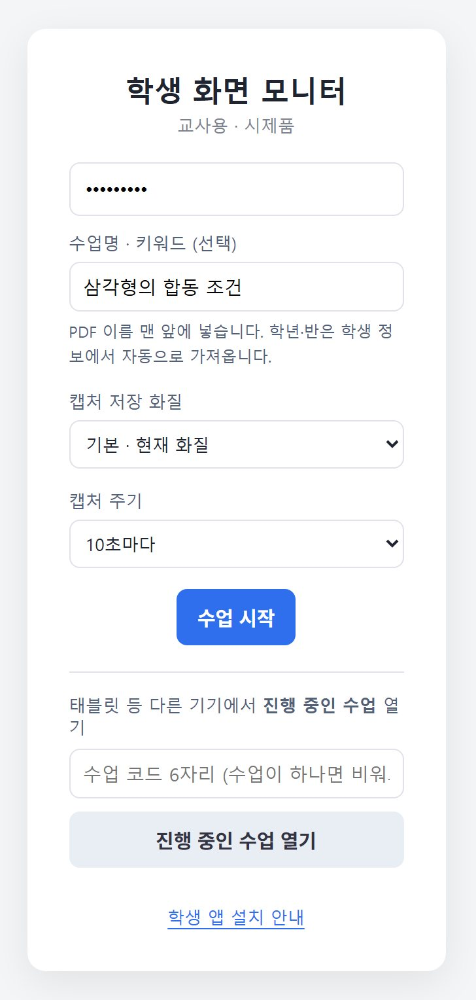
수업명 적고 시작
수업명, 저장 화질, 캡처 주기(10·20·30초)를 고릅니다.
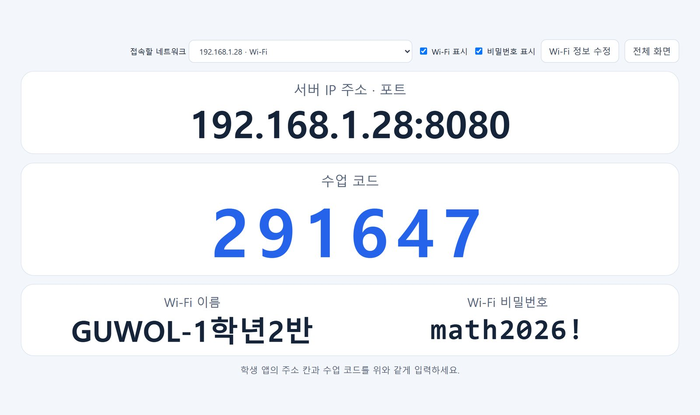
프로젝터에 접속 안내 띄우기
주소, 수업 코드, Wi-Fi 이름과 비밀번호를 한 창에 크게 보여 줍니다.
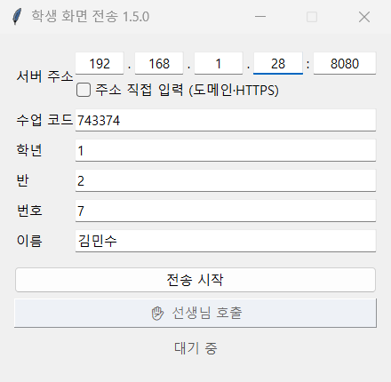
코드 넣고 전송 시작
주소와 학번·이름은 앱이 기억합니다. 보통 수업 코드만 넣으면 됩니다.
기능
수업 중에 이렇게 씁니다
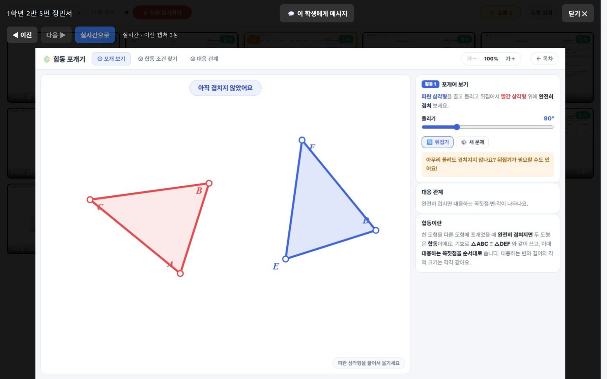
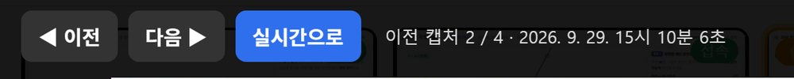
확대 · 이전 캡처
누르면 크게, 넘기면 몇 분 전 화면
타일을 누르면 그 학생 화면만 고화질로 확대됩니다. ◀ 이전을 누르면 조금 전에 무엇을 하고 있었는지 시각과 함께 거슬러 볼 수 있습니다.
- 좌우 방향키로 넘기고 Esc로 닫기
- 확대 화면에서 이 학생에게만 메시지 보내기
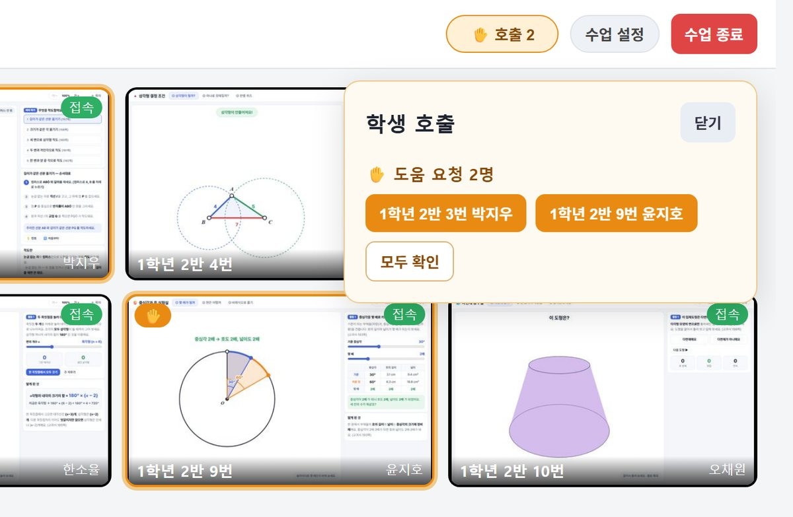
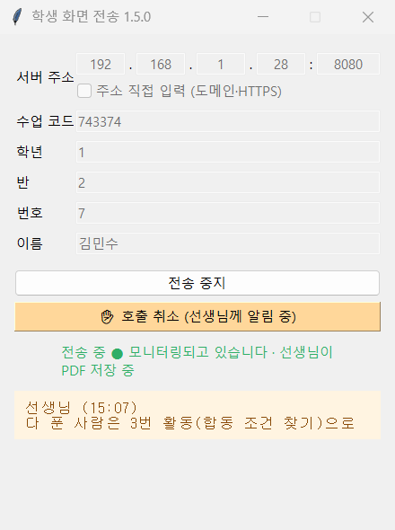
✋ 선생님 호출
손 들기 전에 먼저 보입니다
학생이 선생님 호출을 누르면 알림음과 함께 교사 화면에 이름이 뜨고 타일에 주황 테두리가 생깁니다. 이름을 누르면 그 화면이 열리고 손이 내려갑니다.
- 호출이 와도 타일 순서는 그대로
- 절전·재접속 뒤에도 호출 상태 유지
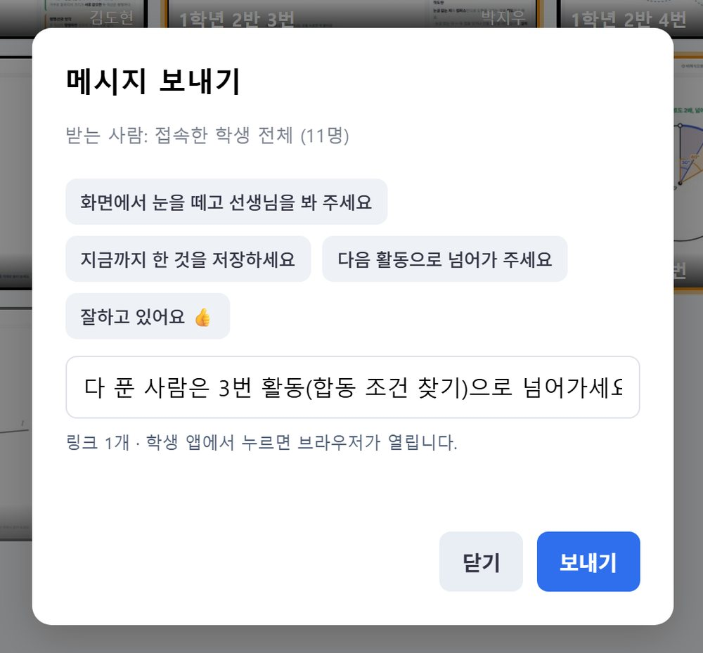
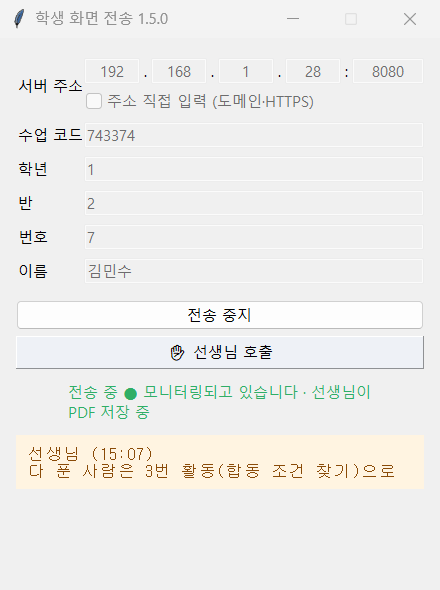
메시지
교실을 조용하게 두고 안내하기
전체 또는 한 명에게 짧은 안내를 보냅니다. 링크를 넣으면 학생이 눌러서 바로 엽니다. 몇 명에게 전달됐는지도 확인됩니다.
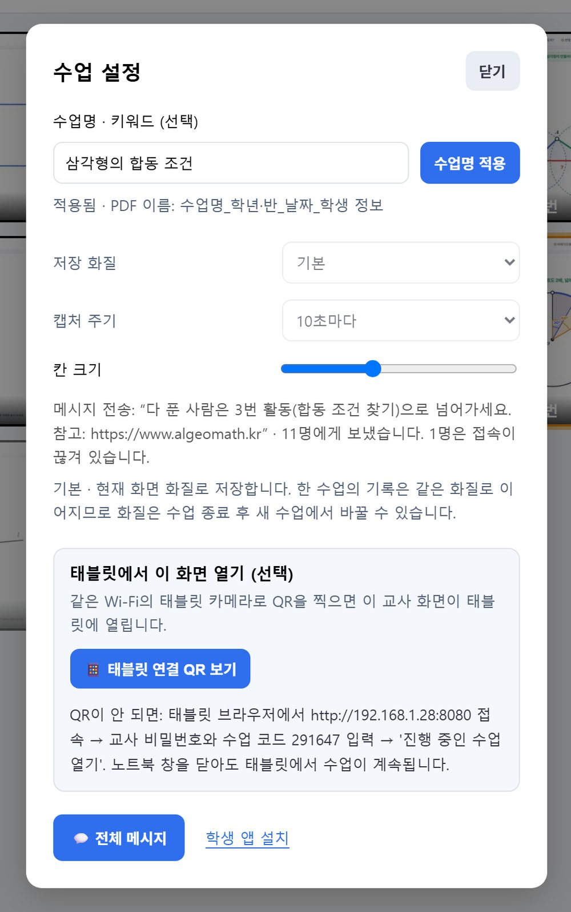
수업 설정 · 태블릿
노트북은 프로젝터로, 모니터링은 태블릿으로
노트북 화면을 수업 자료로 쓰는 동안 학생 화면은 같은 Wi-Fi의 태블릿에서 봅니다. QR 한 번이면 연결되고, QR은 한 번 찍으면 사라지고 2분 뒤 만료됩니다.
수업이 끝나면
학생마다 PDF 한 권, 쪽마다 캡처 시각
아래는 실제로 만들어진 PDF의 쪽입니다. 'AI 분석용 고화질'로 저장하면 학생 기기 화면을 긴 변 2560px로 담아 글씨와 수식까지 읽힙니다. 오른쪽 아래에 캡처 시각이 찍힙니다.
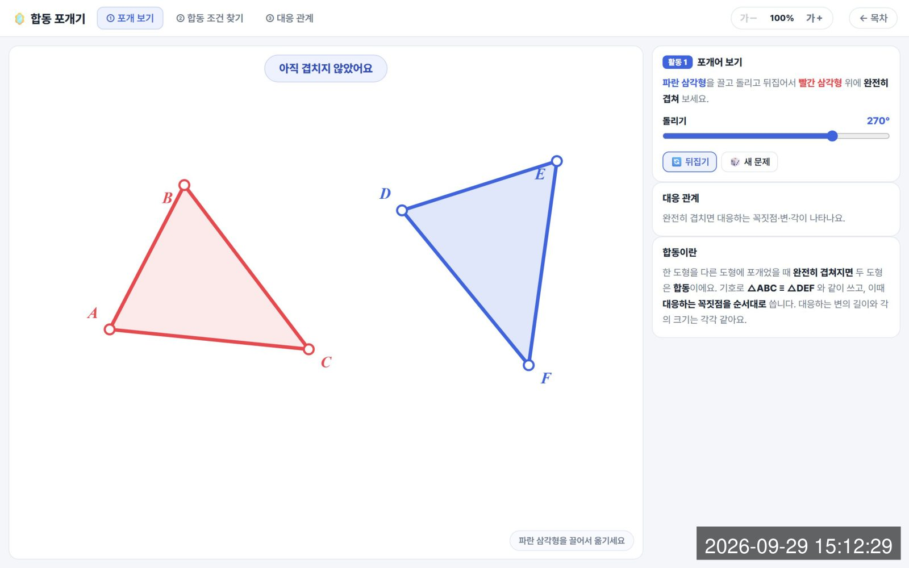
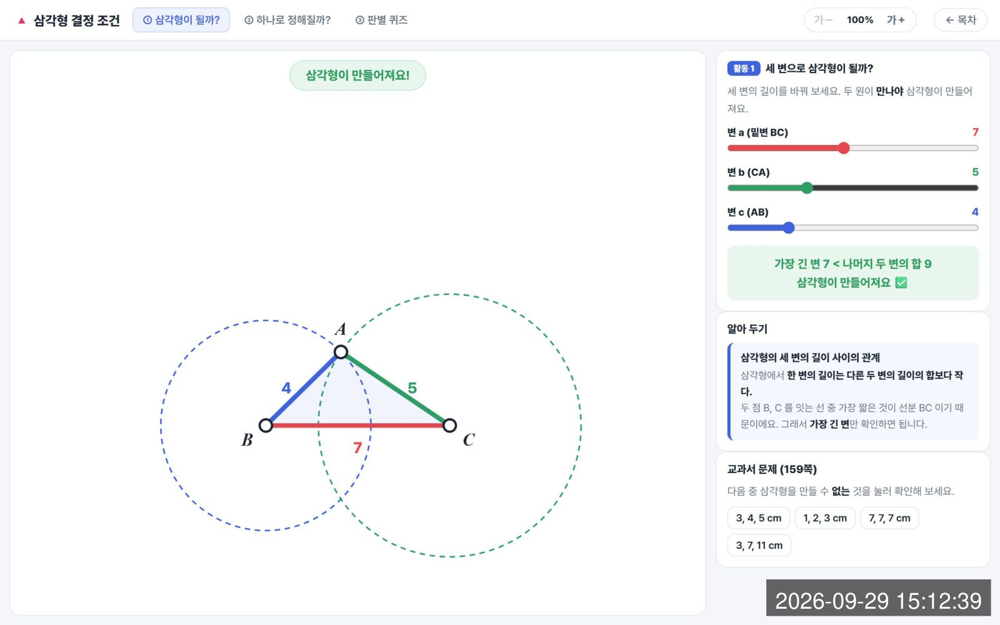
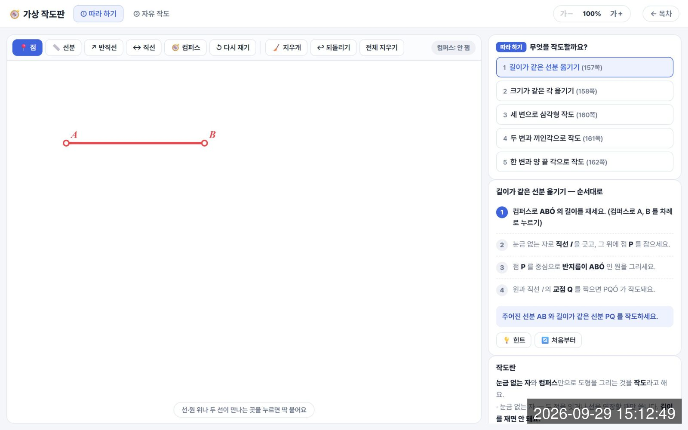
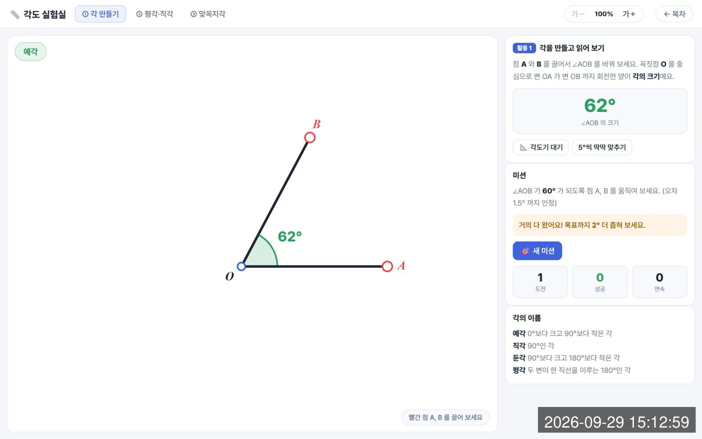
실제 수업 결과물
한 학생의 수업 한 차시가 PDF 한 권과 보고서가 되었습니다
2026년 9월 23일 구월중 1학년 7반 알지오매스 수업(다각형의 외각의 합)에서 한 학생의 화면을 기록한 PDF와, 이 기록을 바탕으로 정리한 학생 활동 보고서입니다.
Gemini Notebook으로 평가하기
이 PDF가 과정중심평가의 근거 자료가 됩니다
PDF 모으기
captures/날짜/수업코드/폴더에 학생별로 쌓입니다. 이름에 수업명과 학번이 들어 있어 정리가 필요 없습니다.소스로 올리기
한 학생의 여러 차시를 모으면 성장 과정이, 한 차시의 학급 전체를 모으면 공통으로 막힌 곳이 보입니다.
기준표와 함께 묻기
루브릭이나 성취기준을 함께 넣고 물으면 답과 함께 근거 쪽을 짚어 줍니다. 쪽에 찍힌 시각으로 그 장면을 바로 확인합니다.
15:12:29에 합동 포개기 활동을 시작했고p.1, 15:12:39에는 세 변 7·5·4로 삼각형이 만들어지는 조건을 확인했습니다p.2.
'가장 긴 변 < 나머지 두 변의 합'이라는 판정 문구를 스스로 확인한 장면이 있어 탐구 과정 항목의 근거로 볼 수 있습니다p.2. 이후 작도 활동으로 넘어갔습니다p.3.
예시 대화입니다. 실제 답변은 자료와 질문에 따라 달라집니다.
AI의 정리는 교사 판단을 돕는 초안입니다. 최종 평가는 PDF 원본을 확인해 교사가 결정합니다.
PDF에는 학생 이름과 화면이 들어 있습니다. 외부 AI 서비스에 올리기 전에 학교 개인정보 지침과 학생·보호자 동의 범위를 확인하세요.
학생을 존중하는 설계
몰래 보지 않습니다
학생이 시작
학생이 직접 전송 시작을 눌러야 화면이 나갑니다. 자동 실행·몰래 설치 없음.
늘 보이는 표시
앱에 "전송 중 · PDF 저장 중"이 표시되고, 창을 숨겨도 트레이 아이콘이 초록색입니다.
교실 안에서만
화면은 교사 노트북으로만 모이고 외부 서버를 거치지 않습니다.
교사 인증
교사 화면은 비밀번호로 들어가며 10번 틀리면 5분간 잠깁니다.
다운로드
필요한 파일은 세 개
항상 최신 버전을 받습니다. 학생 앱은 교사 노트북의 /student 설치 페이지에서도 받을 수 있습니다.
다음 → 설치. 관리자 권한 없이 설치되고 시작 메뉴에 '학생 화면 모니터'가 생깁니다.
설치 파일 받기 ↓ 학생 Windowsscreen-monitor-student.exe파일 하나로 실행합니다.
내려받기 ↓ 학생 Androidscreen-monitor-student.apkAndroid 8.0 이상 태블릿.
내려받기 ↓설치할 수 없는 노트북은 휴대용 zip을 받아 압축을 풀고 학생화면모니터.exe를 실행하세요.
처음 한 번 해야 하는 일이 있나요?
처음 실행할 때 교사 비밀번호와 PDF 저장 폴더를 정합니다. 학생이 접속하려면 교사 노트북 방화벽에서 TCP 8080을 허용해야 합니다. 관리자 권한으로 설치하면 설치 중에 함께 허용할 수 있고, 아니면 학교 정보부에 요청하세요.
실행하면 경고가 떠요.
코드 서명이 없는 프로그램이라 SmartScreen이나 백신이 경고할 수 있습니다. 추가 정보 → 실행으로 진행합니다. Android는 처음 한 번 '이 출처 허용'이 필요합니다.
옆 교실 Wi-Fi에 붙은 학생도 되나요?
교사 노트북과 같은 네트워크여야 합니다. 접속 안내 창의 Wi-Fi에 연결하도록 안내하세요.
iPad나 크롬북은요?
현재는 Windows PC와 Android 태블릿(8.0 이상)만 지원합니다.
PDF가 저장되지 않을 수도 있나요?
트레이 아이콘의 종료를 누르면 진행 중인 수업을 끝내고 학생별 PDF 저장을 마친 뒤에 꺼집니다. 저장에 실패하면 끄지 않고 알려 줍니다. 다만 수업 중에 노트북 전원이 꺼지면 기록을 잃으니 절전되지 않게 해 두세요.